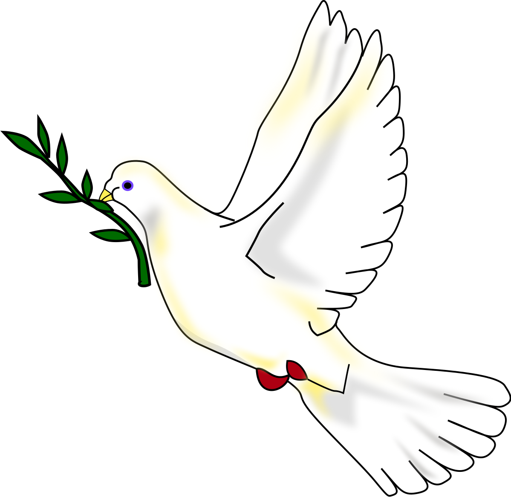

PAZ

Definida en sentido positivo, es un estado a nivel social o personal, en el cual se encuentran en equilibrio
y estabilidad en las partes de una unidad. También se refiere a la tranquilidad mental de una persona o
sociedad; definida en sentido negativo, es la ausencia de inquietud, violencia o guerra.
En un plano personal, la paz es un estado de espíritu sereno donde uno puede estar en armonía con sí mismo y
con los demás. En muchas religiones y filosofías orientales este estado es llamado paz interior y es alcanzado
gracias a esfuerzos de meditación y autoconocimiento, o sea, alcanzando un equilibrio espiritual y mental
generalmente representado por la flor de loto.
Educar en la paz y en los valores que la acompañan desde una edad temprana es fundamental para que los
pequeños crezcan siendo respetuosos, responsables y sepan convivir en paz con todas las personas que les
rodean.